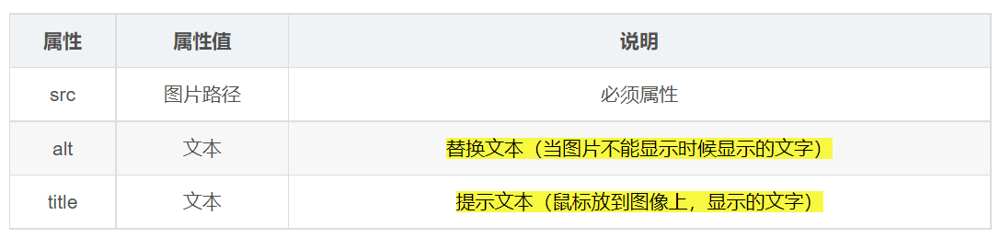

HTML 圖片標籤 Demo
`<img>` 的工作不只是把圖片放到頁面上。你同時要處理圖片從哪裡來、圖片看不到時該留下什麼資訊、在畫面上顯示多大，以及當前情境該選哪種格式或嵌入方式。
1. `<img>` 屬性分工
先決定圖片從哪裡來
圖片是否能顯示，第一步取決於來源位置是否正確。
2. `alt` 和 `title` 不是同一件事
圖片看不到時，仍然要留下資訊
<img src="./images/missing-image.jpg" alt="HTML 入門課程封面" />

這裡的重點不是提示效果，而是圖片載入失敗時仍保留「這原本是一張什麼圖」。
補充說明，不取代替代文字
<img src="../images/image_1776138504618_8385ec9e.png" alt="課程示意圖片" title="點擊可查看完整課程內容" />

`title` 比較像額外補充；就算有它，也不能省略對 `alt` 的思考。
3. `width` / `height` 只改顯示尺寸
較安全
先用單一維度，通常比較不容易變形
顯示尺寸的控制和檔案本身大小是兩回事；你只是改了畫面上看起來多大。
4. 圖片格式怎麼選
JPG / JPEG 照片類優先考慮
適合照片、風景、人物、商品實拍圖。
通常檔案較小，但不支援透明背景。
PNG 透明背景與邊緣清楚的圖
適合 Logo、圖示、UI 圖、教學截圖。
畫質穩定，可支援透明。
GIF 簡單動圖
適合短小循環動畫、表情圖。
色彩有限，通常不是靜態高畫質圖片首選。
WebP 現代網頁常見選項
可支援有損、無損、透明與動畫。
很多情況下能兼顧畫質與體積，但仍要看目標環境。
5. 圖片格式 vs `data URL` / `base64`
`jpg`、`png`、`gif`、`webp` 在討論什麼
<img src="../images/image_1776138504618_7ad86ea6.jpg" alt="示意照片" />
外部檔案載入

這裡談的是「這張圖本身是什麼格式」，例如照片常見 `jpg`。
`data URL` 在討論什麼
<img src="data:image/svg+xml,..." alt="內嵌小圖示" />
直接寫進 `src` 的資料

這裡不是在換圖片格式，而是在改「資料怎麼被嵌入到 HTML」。